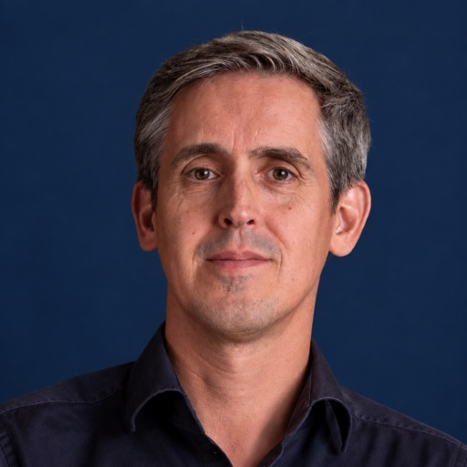

Wie is Anton?
Goede publieke gebouwen ontstaan niet vanzelf. Ze zijn het resultaat van mensen die samen complexe vraagstukken weten te vertalen naar doordachte besluiten.
Als projectmanager help ik samenwerking tussen opdrachtgevers, gebruikers en ontwerpteams bewust vorm te geven. Ik combineer mijn achtergrond als architect met ruim twintig jaar ervaring in ontwerp-, ontwikkel- en projectmanagement. Vanuit die ervaring ontwikkelde ik Multidisciplinair Samenwerken (MDS), een praktische aanpak die teams helpt betere integrale besluiten te nemen in complexe projecten.
Mijn loopbaan begon in de architectuur, waar ik werkte aan projecten zoals de Markthal Rotterdam, Valley Amsterdam en Bałtyk Tower in Poznań. Daar ontdekte ik dat de kwaliteit van een gebouw niet alleen wordt bepaald door het ontwerp, maar vooral door de manier waarop disciplines, belangen en gebruikers samenkomen in ontwerpbesluiten.
Die fascinatie bracht mij van architectuur naar projectmanagement. Vandaag leid ik complexe publieke huisvestingsprojecten, ontwikkel ik nieuwe werkwijzen voor multidisciplinair samenwerken, begeleid ik afstudeeronderzoek aan de TU Delft en ontwikkelde ik eerder Project Connect, een digitale tool die projectteams wereldwijd binnen Haskoning helpt grip te houden op planning, uren en financiën.
Ik geloof niet dat betere projecten ontstaan door méér processen, maar door betere gesprekken, heldere keuzes en gedeeld eigenaarschap. Daarom ontwerp ik niet alleen projecten, maar ook de samenwerking die nodig is om ze succesvol te realiseren.
Naast mijn werk bouw ik apps die één ding goed doen. Geen account, geen advertenties, geen overbodige functies: een helder antwoord op één vraag. De eerste is Glutencheck, die in één foto laat zien of een product gluten bevat.
Werk
-
2018 – heden
Haskoning (voorheen Royal HaskoningDHV)
Projectmanager publieke gebouwen en ontwerper van multidisciplinaire samenwerking, Delft -
2016 – 2017
Mei architects and planners
Senior architect -
2015 – 2016
Kokon Architectuur & Stedenbouw
Hoofd architectuur -
2004 – 2015
MVRDV
Architect en projectleider, onder meer van de Markthal in Rotterdam -
2003 – 2004
Planbureau voor de Leefomgeving
Freelance onderzoeker
Opleiding
-
2019 – 2020
IPMA Level C
Gecertificeerd projectmanager -
1994 – 2003
TU Delft
Master of Science Architecture, met lof